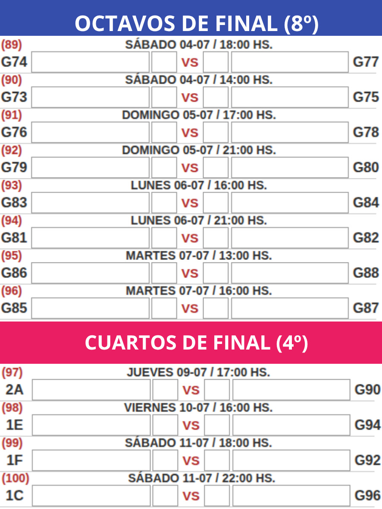
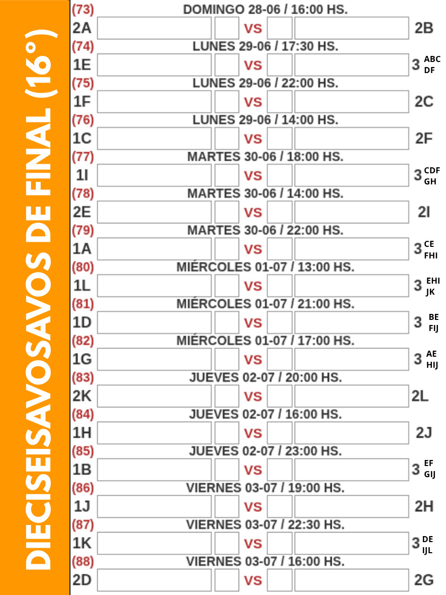
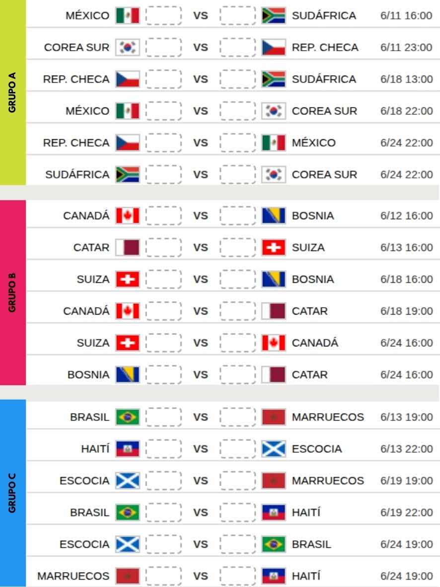
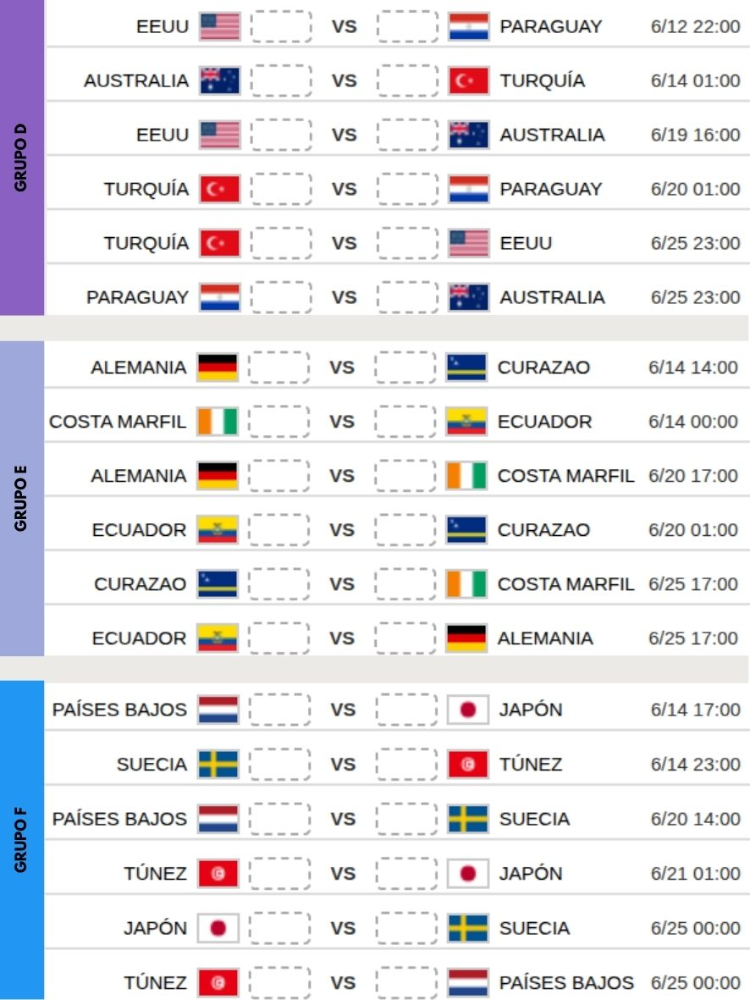
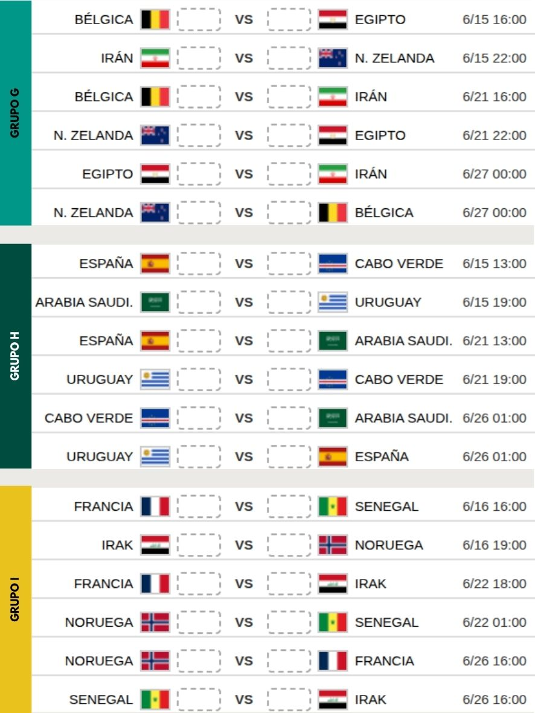

Paso 1: Crear Tapa
Subí tu imagen en formato 3:4 para armar la página principal.
¿No tenés imagen? Créala con Inteligencia Artificial
Completa tus datos para personalizar la plantilla. Luego, cópiala o andá a ChatGPT.
Título superior: '[TU TÍTULO PRINCIPAL]'.
Título central con letras grandes y llamativas: 'Fixture Mundial 2026'.
Abajo incluye en pequeño números o íconos de contacto: WhatsApp [TU NÚMERO] e Instagram [TU USUARIO].
El fondo debe disimular imágenes relacionadas a [TU TEMÁTICA]."
Descarga tu imagen favorita de la IA, y luego hacé click en "Subir Tu Imagen" más abajo.
Paso 2: Colores y Previsualización
Modifica los colores que se multiplicarán sobre las imágenes y observa el resultado en tiempo real.



Tip de Diseño
Te recomendamos colocar colores llamativos en el primer y tercer selector de las esquinas, y elegir blanco en el centro para dar el mejor contraste de resplandor.
Paso 3: Exportación Final A4
Este formato está estrictamente configurado para hoja A4. Ajustamos la vista para que quepa en tu pantalla.
Mini Tutorial: ¿Cómo doblar y armar tu Fixture?
Una vez que imprimas tu PDF, armar el fixture es súper sencillo. Seguí este diagrama para realizar los pliegues correctamente de forma acorde a las marcas. ¡Así conseguirás tu formato perfecto de bolsillo ideal para repartir!



